Context Engineering for AI Agents: Context Windows, Memory, Tools, and Guardrails
TL;DR
Context engineering is the pipeline that decides what the model sees at the moment of decision: instructions, examples, knowledge, memory, skills, tools, guardrails. Most production agents either work or break at this layer. Below is the blueprint I keep coming back to, with the patterns I actually use.
The same agent that aces a 30-minute demo can collapse on day three in production. Almost always, the failure has nothing to do with the model and everything to do with what was in the context when it made the wrong call. A stale memory. A doc that's no longer relevant. A tool description that drifted. A vague instruction.
Context engineering is what you do to stop that from happening: designing what the model sees before each decision, on purpose, with a budget. This article walks through the patterns I use.
Why context engineering matters for AI agents
A customer support agent runs for three weeks and handles 200 tickets. Then it starts hallucinating product details, mixing up customers, and calling the wrong APIs. The model did not get worse. The context did.
Four things changed in 2025 that make this more painful than it used to be. Agents stopped being chatbots and started taking actions, which means a single bad context decision can cascade through a ten-step plan instead of producing one bad reply. Centralized memory and standards like MCP make it possible to load personal context safely, but only if you design the layer properly — without governance you leak PII or blow the window. Hybrid retrieval, reranking, and graph-aware retrieval all matured, which cuts hallucinations and tokens, provided you actually route queries to the right strategy. And most of the agentic pilots I see stalling are stalling on context design and governance, not on model quality. A deliberate context layer is what unblocks them.
Key concepts for beginners
A few terms that come up throughout the post:
- Context window: the working memory of the model. Maximum text (in tokens) it can look at in a single decision. Exceed it and the model crashes or forgets the beginning.
- Tokens: the unit text gets chunked into. Roughly 1,000 tokens to 750 words.
- Attention budget: language models attend to every pair of tokens, so for n tokens there are n² relationships. As context grows, that budget gets stretched thin, and middle tokens lose out compared to the beginning and end.
- Embeddings: numerical representations of text. They let you search by meaning, so a query for "dog" can find "puppy."
- JSON Schema: a standard way to describe the shape of JSON data. You use it to force the model to output specific fields, like
{"answer": "...", "citations": [...]}. - MCP (Model Context Protocol): an open standard that lets AI models talk to external data and tools through a common interface. Think of it as a USB port for connecting an agent to your local files, databases, or Slack.
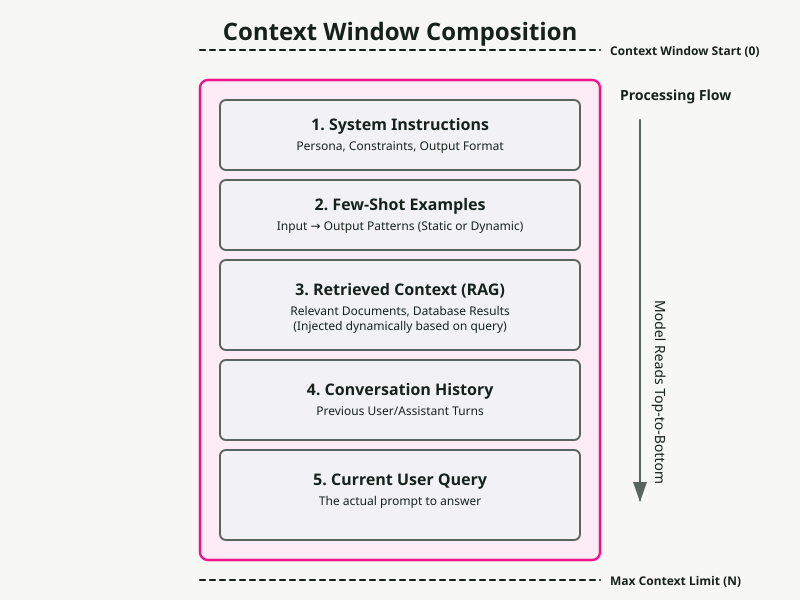
What is the context layer?
A pipeline plus a policy that selects and structures inputs per step, applies controls (format, safety, policy), and feeds the model just-enough, just-in-time context.
Think of it as the assembly line that prepares exactly what the model needs to make a good decision.
Context is a finite resource. Models, like humans with limited working memory, have an attention budget that depletes as context grows. Every new token spends some of it. The engineering problem is finding the smallest set of high-signal tokens that gets you the answer you want.
There is no single canonical decomposition — different teams ship different stacks. The one I use looks like this:
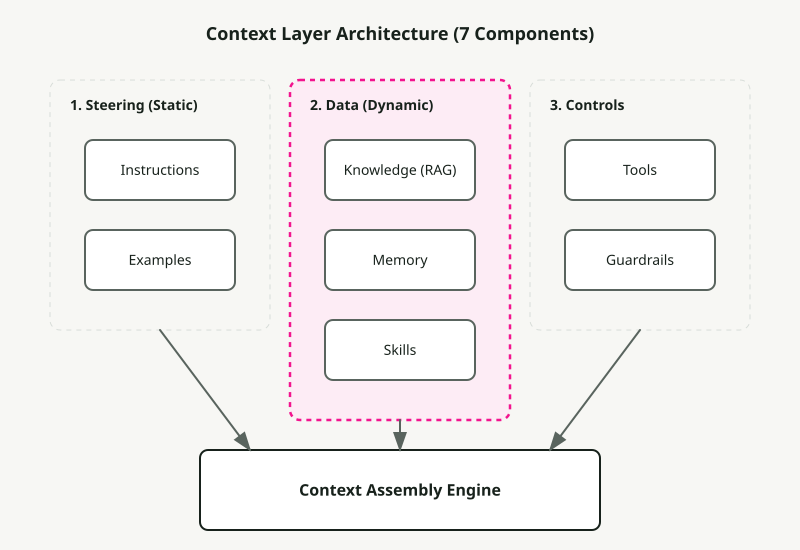
1) Instructions
A durable contract for behavior: role, tone, constraints, output schema, evaluation goals. Modern models respect instruction hierarchies (system > developer > user), so use that hierarchy explicitly instead of cramming everything into one block.
You reach for instructions when you need consistent output (reports, SQL, API calls, JSON) or when you have to enforce policy — redact PII, refuse requests for things you do not support, never include internal URLs. The patterns that work in practice are the obvious ones: keep policy blocks separate from the user task, drive deterministic downstream code with JSON Schemas, and split system, developer, and user messages so the model knows which voice each instruction comes from.
A plain example of a policy block:
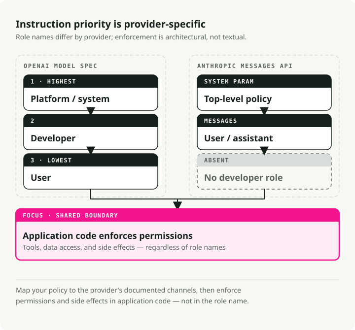
SYSTEM RULES
- Role: support assistant for ACME.
- Always output valid JSON per AnswerSchema.
- If a request needs account data, ask for the account ID.
- Never include secrets or internal URLs.
Schema-guided reasoning (SGR)
The most useful upgrade to "give the model instructions" is making those instructions structural. Drive the agent with JSON Schemas for the plan, tool arguments, intermediate results, and the final answer. The model emits and consumes JSON at each step, and your code validates it before anything else happens. This reduces ambiguity, makes retries deterministic, and improves safety because types and required fields are enforced through the whole loop.
The flow is short. Define schemas for Plan, ToolArgs, StepResult, and FinalAnswer. At each step the model outputs JSON matching one of them. Your code validates. If validation fails, attempt one automatic repair (for example, fill in missing required fields with sensible defaults). If repair fails, refuse and log.
Concretely: instead of the model saying "I'll search for the customer's tickets," it outputs
{
"action": "call_tool",
"tool": "search_tickets",
"args": { "customer_id": "A-123", "limit": 10 },
"expected_schema": "TicketList"
}
and your code validates args against the tool's schema before calling the API.
2) Examples
A few short input-output pairs that show the exact format, tone, and steps the model should follow. Reach for examples when you need a specific template (tables, JSON, SQL, API calls) or when you want domain-specific phrasing and consistent tone.
A few rules I keep relearning. Show the exact target structure in your canonical demo, not a paraphrase of it. Pair good examples with bad ones — contrasting a typical mistake with the desired result teaches more than two correct outputs. Pair your JSON Schema with two or three short demos rather than one long one. And keep them short: many small focused demos beat one sprawling example almost every time.
3) Knowledge
Grounding the model with external facts: vector and keyword retrieval, reranking, graph queries, web fetches, enterprise sources. You need this when the model cannot know the answer from its weights — fresh facts, private facts, or anything that needs a citation.
The retrieval stack worth defaulting to is hybrid (BM25 plus dense) with a reranker on top to shrink the token bill. Reach for graph-aware retrieval (GraphRAG) when the answer requires crossing documents, and for adaptive RAG when one query type does not fit all — sometimes you want no retrieval, sometimes a single shot, sometimes an iterative loop.
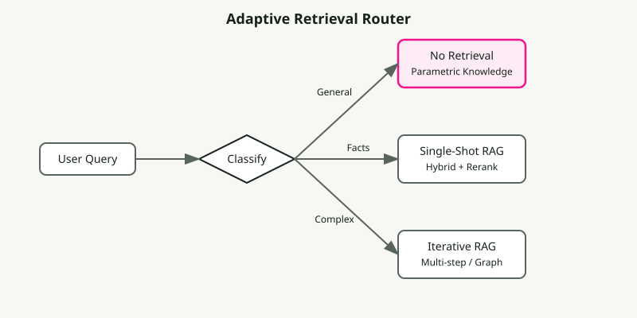
The parameters that actually move quality are smaller than the literature implies. Chunk by semantic boundary (paragraphs, sections) instead of fixed size — chunking is the single decision that makes or breaks retrieval quality on real documents. Start top-k at 10 to 20 for hybrid, then rerank down to 3 to 5. Use MMR with λ around 0.7 as a default for diversity. And always include source references and direct quotes in your output, not because the model will hallucinate without them, but because they are what makes the answer auditable.
4) Memory
Durable context across turns and sessions. Short-term memory holds conversation state. Long-term memory holds user and app facts. Episodic memory holds events. Semantic memory holds entities. Use memory when you want personalization and continuity, or when multiple agents coordinate over days or weeks.
The patterns that survive contact with production: entity memories (names, IDs, preferences) with explicit expiry policies; scoped retrieval from a long-term store backed by vectors, key-value pairs, or a graph; and tying memory to compression so that when short-term memory grows large it gets summarized rather than truncated. The summarization piece is covered in Context Compression Strategies [7].
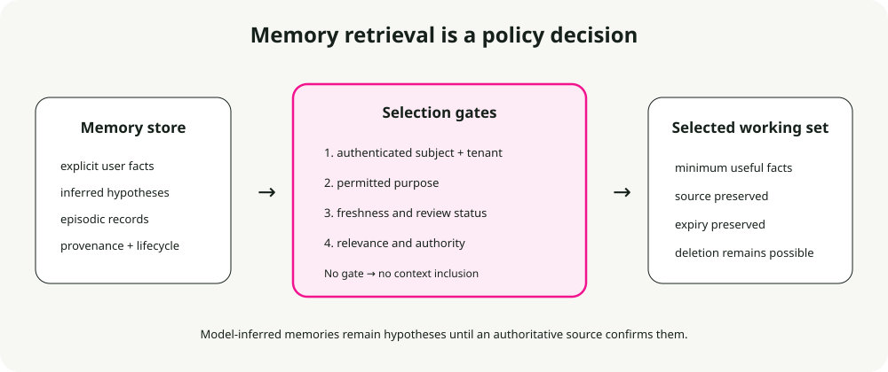
The expiry policy I default to:
- Preferences: 365 days.
- Episodic events: 90 days.
- Short-term state: clear at session end.
- Entities: no expiry, but require periodic validation.
5) Skills
Composable domain expertise that agents discover and load on demand. Anthropic's Agent Skills framework is the reference design for capturing procedural knowledge and sharing it across agents.
Building a skill for an agent is like putting together an onboarding guide for a new hire. — Anthropic Engineering Blog
You want skills when you need domain-specific expertise (PDF manipulation, git, data analysis), when you want reusable procedures across agents or organizations, or when you want to specialize an agent without hardcoding behaviors into the system prompt.
What is a skill?
A skill is an organized folder containing instructions, scripts, and resources the agent can discover and load when relevant:
- A
SKILL.mdfile with a name, a description (in YAML frontmatter), and the skill's instructions. - Additional files — references, templates — that the skill can pull in.
- Code: Python or other executables the agent can run as tools.
Skills pattern: progressive disclosure
The principle that makes skills scale is progressive disclosure: load information only when needed. (See The progressive disclosure principle below for the general version.) At startup, only skill names and descriptions sit in context — enough for the agent to know what is available. The full SKILL.md only loads when the skill is activated. Deeper referenced files load only when the activated skill needs them.
This means skill content is effectively unbounded. The agent does not pay context for what it does not use.
┌─────────────────────────────────────────────────────────┐
│ Context Window │
├─────────────────────────────────────────────────────────┤
│ System Prompt │
│ ├── Core instructions │
│ └── Skill metadata (name + description only) │
│ • pdf: "Manipulate PDF documents" │
│ • git: "Advanced git operations" │
│ • context-compression: "Manage long sessions" │
├─────────────────────────────────────────────────────────┤
│ [User triggers task requiring PDF skill] │
│ │
│ → Agent reads pdf/SKILL.md into context │
│ → Agent reads pdf/forms.md (only if filling forms) │
│ → Agent executes pdf/extract_fields.py (without loading)│
└─────────────────────────────────────────────────────────┘
Skill best practices
Anthropic's guidelines come down to four things. Start with evaluation: run the agent on representative tasks, find the gaps, and write skills to close them. Structure for scale: split a large SKILL.md into separate files, and keep paths separate when the contexts are mutually exclusive. Watch how the agent uses your skills and iterate on names and descriptions until triggering accuracy is high. And let the agent help: ask Claude to capture successful approaches into reusable skill content.
Security considerations
Skills introduce vulnerabilities by definition — they hand the agent new capabilities through instructions and code. Install only from sources you trust. Audit before use, including bundled files, code dependencies, and any network connections. Pay particular attention to instructions that connect the skill to external services, since that is where exfiltration usually starts.
6) Tools
Function calls that fetch data or take actions: APIs, databases, search, file ops, computer use. You want tools when you need deterministic side effects and data fidelity, or when you orchestrate plan-call-verify-continue loops.
The patterns I default to are tool-first planning with post-call validators, structured outputs between steps, and explicit fallbacks when tools fail (retry, then degrade, then human-in-loop).
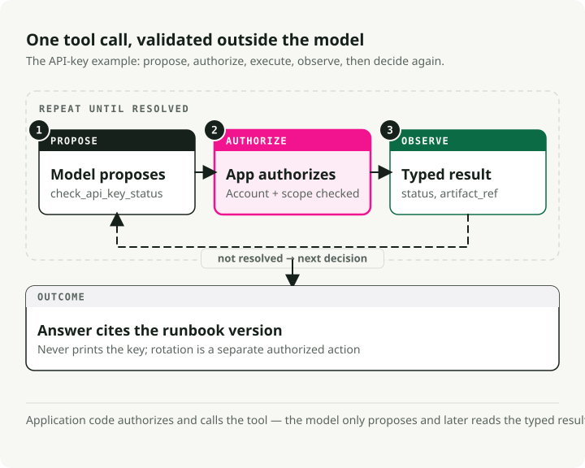
Three concepts worth being precise about. Idempotent means safe to retry without side effects (GET yes, POST or DELETE no). Postconditions are the checks you run after each call: non-empty result, status equals "ok", valid JSON. The fallback chain is the order you walk when something goes wrong: retry, then degrade gracefully, then escalate to a human.
A note on MCP
MCP is becoming the standard for how agents connect to tools and data [6]. Instead of writing a custom API wrapper for every service, you run an MCP server for each one and the agent discovers the available tools and resources automatically.
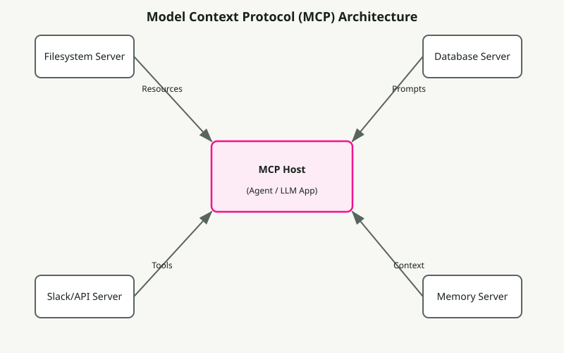
7) Guardrails
Input and output validation, safety filters, jailbreak defense, schema enforcement, content policy. You want guardrails when you need compliance or brand integrity, and when you want typed correct outputs and safe behavior.
The shape that holds up in production: programmable rails (policy rules plus actions), schema and semantic validators (types, regex, evals), and central policy with observability (dashboards, red-teaming).
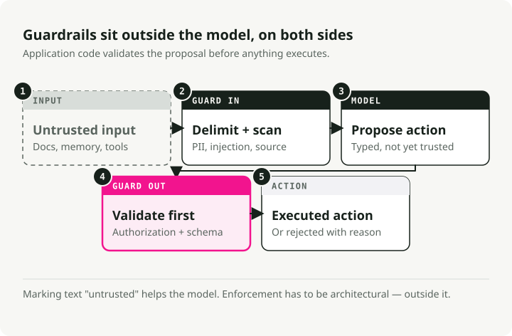
The repair-versus-refuse decision is the one teams get wrong. Schema violations get one automatic repair attempt; if that fails, refuse with a clear error. Policy violations skip the repair attempt entirely — refuse immediately and suggest a safe alternative.
Four common guardrail types cover most production needs. Input guards catch PII, prompt injection, and toxicity before the model sees them. Output guards enforce schema, content policy, and factual consistency. Tool guards handle rate limiting, permission checks, and cost thresholds. Memory guards redact PII before storage and enforce expiry.
Concrete example: a support bot answering a ticket
Here is what the context layer assembles when a customer asks "Why is my API key not working?":
- Instructions: role is a helpful support assistant for ACME, cite sources, return JSON
{answer, sources, next_steps}. - Examples: two short Q→A pairs showing tone and JSON shape, one about API keys, one about billing.
- Knowledge: search the help center and product runbooks for "API key troubleshooting"; include relevant quotes.
- Memory: customer name "Sam", account ID "A-123", plan "Pro", last interaction "API key created 3 days ago".
- Skills: load the
ticket-handlingskill with troubleshooting procedures, escalation policies, and resolution templates. - Tools:
search_tickets(customer_id),check_api_key_status(key),create_issue(description). - Guardrails: redact API key values in output; if schema fails, repair once; if policy is violated (a request to delete production data, say), refuse politely.
The model receives all of this structured context, generates an answer, and the guardrails validate it before it goes back to the customer.
Context fundamentals deep dive
Before the patterns make sense, the anatomy needs to.
The anatomy of context
Context has several distinct components, each with different characteristics and constraints.
System prompts establish the agent's identity, constraints, and behavioral guidelines. They load once at session start and persist for the conversation. The trick is finding the right altitude: specific enough to actually steer behavior, but flexible enough to leave room for judgment. Go too low and you ship brittle hardcoded rules. Go too high and the model has no concrete signal to act on.
Organize prompts into distinct sections using XML tags or Markdown headers:
<BACKGROUND_INFORMATION>
You are a Python expert helping a development team.
Current project: Data processing pipeline in Python 3.9+
</BACKGROUND_INFORMATION>
<INSTRUCTIONS>
- Write clean, idiomatic Python code
- Include type hints for function signatures
- Add docstrings for public functions
</INSTRUCTIONS>
<TOOL_GUIDANCE>
Use bash for shell operations, python for code tasks.
File operations should use pathlib for cross-platform compatibility.
</TOOL_GUIDANCE>
Tool definitions specify the actions the agent can take. Each tool has a name, description, parameters, and return format. The descriptions are what actually steer behavior. Poor descriptions force the agent to guess; good ones include usage context, examples, and sensible defaults. The consolidation principle: if a human engineer cannot definitively say which tool to reach for, an agent will not do better. That is your signal to merge or rename them.
Retrieved documents pull relevant content into context at runtime instead of pre-loading everything. The just-in-time approach keeps lightweight identifiers around — file paths, stored queries, web links — and loads the actual data only when needed.
Message history is the conversation between user and agent, including previous queries, responses, and reasoning. For long-running tasks it can grow to dominate the window. It also acts as scratchpad memory, where agents track progress and task state.
Tool outputs are the results of agent actions: file contents, search results, command output, API responses. In typical agent trajectories, observations end up consuming over 80% of total context [4]. That number is the pressure behind techniques like observation masking and compaction.
Context windows and attention mechanics
Language models compute attention as pairwise relationships between every pair of tokens. For n tokens, that is n² relationships. As context grows, the model's ability to capture those relationships gets stretched thin.
Models also pick up their attention patterns from training data, and that data is dominated by shorter sequences. So the model has comparatively little experience with context-wide dependencies. The end result is an attention budget that runs down as context grows.
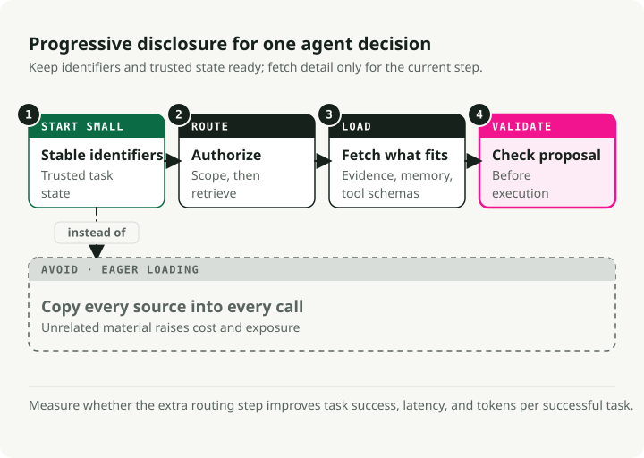
The progressive disclosure principle
Progressive disclosure manages context efficiently by loading information only as needed. At startup, agents load only skill names and descriptions — enough to know when a skill might be relevant. Full content loads only when activated for specific tasks.
# Instead of loading all documentation at once:
# Step 1: Load summary
docs/api_summary.md # Lightweight overview
# Step 2: Load specific section as needed
docs/api/endpoints.md # Only when API calls needed
docs/api/authentication.md # Only when auth context needed
Context quality versus quantity
The assumption that larger context windows solve memory problems has been empirically debunked. Context engineering means finding the smallest possible set of high-signal tokens.
Several forces push you toward efficiency. Processing cost grows disproportionately with context length — not double for double the tokens, exponentially more in time and compute. Model performance degrades beyond certain context lengths even when the window technically supports more. And long inputs remain expensive even with prefix caching.
The guiding principle is informativity over exhaustiveness. Include what matters for the decision at hand, exclude what does not.
Context degradation patterns
Language models exhibit predictable degradation patterns as context grows. Knowing them is what lets you diagnose failures and design resilient systems.
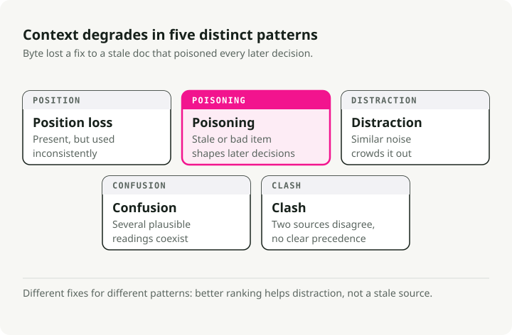
The lost-in-middle phenomenon
The most well-documented degradation pattern is "lost-in-middle," where models show U-shaped attention curves [1]. Information at the beginning and end of context gets reliable attention; information in the middle suffers from 10-40% lower recall accuracy.
The mechanism is concrete. Models allocate massive attention to the first token (often the BOS token) to stabilize internal states, creating an "attention sink" that consumes attention budget [2]. As context grows, middle tokens fail to win enough attention weight.
The practical fix is to put critical information at the beginning or end of context. Use summary structures that surface key information at attention-favored positions.
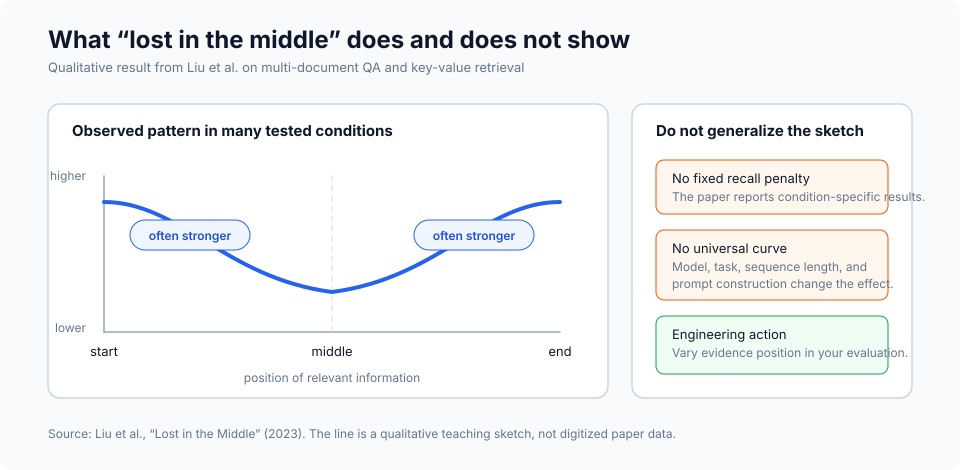
# Organize context with critical info at edges
[CURRENT TASK] # At start
- Goal: Generate quarterly report
- Deadline: End of week
[DETAILED CONTEXT] # Middle (less attention)
- 50 pages of data
- Multiple analysis sections
- Supporting evidence
[KEY FINDINGS] # At end
- Revenue up 15%
- Costs down 8%
- Growth in Region A
For instructions you absolutely cannot afford to lose, duplicate them at both the start and the end. Since models attend strongly to both edges, the same instruction in both positions gets attention regardless of context length. This is the right move for system constraints that must always be followed, output format requirements, and safety policies.
# Example: Duplicating critical instructions
[SYSTEM - START]
CRITICAL: Always respond in JSON format. Never include PII.
[... long context with documents, history, tools ...]
[SYSTEM - REMINDER]
CRITICAL: Always respond in JSON format. Never include PII.
Context poisoning
Context poisoning is what happens when hallucinations, errors, or incorrect information enters context and compounds through repeated reference. Once poisoned, the context creates feedback loops that reinforce the wrong belief.
It usually arrives through one of three doors: tool outputs containing errors or unexpected formats, retrieved documents with incorrect or outdated information, and model-generated summaries that introduce hallucinations and then persist.
You notice it through symptoms: degraded output quality on tasks that previously succeeded, agents calling the wrong tools or wrong parameters, and persistent hallucinations that survive correction attempts.
Recovery is mechanical. Truncate context to before the poisoning point, explicitly note the poisoning and request re-evaluation, or restart with clean context preserving only verified information.
Context distraction
Context distraction emerges when context grows so long that the model over-focuses on what you provided at the expense of what it learned in training. Research shows that even a single irrelevant document reduces performance on tasks involving relevant documents [8]. The effect follows a step function — the presence of any distractor triggers degradation.
The key insight: models cannot skip irrelevant context. They must attend to everything provided, and that attention is itself the distraction, even when the irrelevant information is clearly not useful.
The mitigation is relevance filtering before loading documents, namespacing to make irrelevant sections easy to ignore, and asking whether information needs to be in context at all or can be accessed through a tool call.
Context confusion
Context confusion is what happens when irrelevant information influences responses in ways that degrade quality. If you put something in context, the model has to pay attention to it, and that means it can incorporate irrelevant information, use tool definitions meant for a different task, or apply constraints from a different context.
Signs to watch for: responses that address the wrong aspect of the query, tool calls that look right for a different task, outputs that mix requirements from multiple sources.
The fix is explicit task segmentation (different tasks get different context windows), clear transitions between contexts, and state management that isolates context.
Context clash
Context clash develops when accumulated information directly conflicts, creating contradictory guidance. This is different from poisoning, where one piece is wrong — in clash, multiple correct pieces contradict each other.
Common sources include multi-source retrieval with contradictory information, version conflicts (outdated and current information both in context), and perspective conflicts (valid but incompatible viewpoints).
Resolve it through explicit conflict marking, priority rules establishing which source takes precedence, and version filtering that excludes outdated information.
Model-specific degradation thresholds
Research gives concrete data on when degradation begins. Effective context length — where models maintain optimal performance — is often significantly smaller than the advertised maximum [3]:
| Model | Max Context | Effective Context | Degradation Notes |
|---|---|---|---|
| GPT-4 Turbo | 128K tokens | ~32K tokens | Retrieval degrades after 32K, accuracy suffers beyond 64K |
| GPT-4o | 128K tokens | ~8K tokens | Complex NIAH accuracy drops from 99% to 70% at 32K |
| Claude 3.5 Sonnet | 200K tokens | ~4K tokens | Complex NIAH accuracy drops from 88% to 30% at 32K |
| Gemini 1.5 Pro | 1M tokens | ~128K tokens | 99% NIAH recall at 1M, best long-context performance |
| Gemini 2.0 Flash | 1M tokens | ~32K tokens | Complex NIAH accuracy drops from 94% to 48% at 32K |
Sources: RULER benchmark [3], NoLiMa benchmark [9], Google technical reports.
The key finding from RULER [3]: only 50% of models claiming 32K+ context maintain satisfactory performance at 32K tokens. Near-perfect scores on simple needle-in-a-haystack tests do not translate to real long-context understanding — complex reasoning tasks show much steeper degradation.
Context compression strategies
Terminology note: context compression is an umbrella that includes summarization (for conversation history and memory), observation masking (for tool outputs), and selective trimming [5]. The memory summarization mentioned in the Memory section is one application of these broader compression strategies.
When agent sessions generate millions of tokens of conversation history, compression stops being optional. The naive approach is aggressive compression to minimize tokens per request. The correct optimization target is tokens per task [4]: total tokens consumed to complete the task, including re-fetching costs when compression loses something critical.
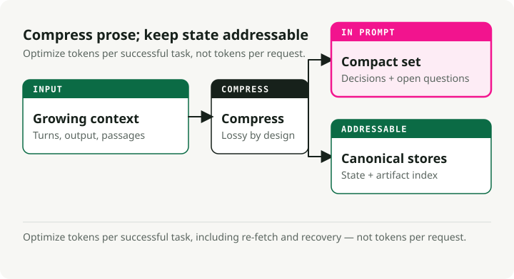
When compression is needed
Activate compression when agent sessions exceed context window limits, when agents start "forgetting" what files they modified, when you are debugging a long coding session that has spilled across hours, or when performance noticeably degrades in extended conversations.
Three production-ready approaches
Anchored iterative summarization maintains a structured persistent summary with explicit sections for session intent, file modifications, decisions, and next steps. When compression triggers, it summarizes only the newly-truncated span and merges that into the existing summary. The reason it works is that structure forces preservation: dedicated sections act as a checklist the summarizer must populate, which prevents silent drift.
## Session Intent
Debug 401 Unauthorized error on /api/auth/login despite valid credentials.
## Root Cause
Stale Redis connection in session store. JWT generated correctly but session could not be persisted.
## Files Modified
- auth.controller.ts: No changes (read only)
- config/redis.ts: Fixed connection pooling configuration
- services/session.service.ts: Added retry logic for transient failures
- tests/auth.test.ts: Updated mock setup
## Test Status
14 passing, 2 failing (mock setup issues)
## Next Steps
1. Fix remaining test failures (mock session service)
2. Run full test suite
3. Deploy to staging
Opaque compression produces compressed representations optimized for reconstruction fidelity. It hits the highest compression ratios (99%+) but sacrifices interpretability. Use it when maximum token savings matter and re-fetching is cheap.
Regenerative full summary generates a detailed structured summary on each compression. The output is readable, but details can decay across repeated compression cycles.
Compression comparison
Research from Factory.ai [4] compared compression strategies on real production agent sessions:
| Method | Compression Ratio | Quality Score | Best For |
|---|---|---|---|
| Anchored Iterative | 98.6% | 3.70/5 | Long sessions, file tracking |
| Regenerative | 98.7% | 3.44/5 | Clear phase boundaries |
| Opaque | 99.3% | 3.35/5 | Maximum savings, short sessions |
Reading the metrics:
- Compression ratio (98.6%): percentage of tokens removed. A 98.6% ratio means that out of 100,000 tokens of history, only 1,400 remain.
- Quality score (3.70/5): measured via probe-based evaluation — after compression, the agent gets asked questions that require recalling specific details from the truncated history (what files did we modify, what was the error message). 3.70/5 means the agent answered roughly 74% of probes correctly.
- 0.7% additional tokens: comparing anchored iterative (98.6%) to opaque (99.3%), the difference is 0.7%. For a 100K token session, that is 1,400 tokens versus 700. The extra 700 tokens (0.7% of the original) buys 0.35 quality points (3.70 vs 3.35) — significantly better recall of task-critical details.
The artifact trail problem
Artifact trail integrity is the weakest dimension across all compression methods, scoring 2.2-2.5 out of 5.0. Coding agents need to know which files they created, modified, or read, and compression often loses that.
Recommendation: implement a separate artifact index or explicit file-state tracking in the agent scaffolding, on top of general summarization.
Compression trigger strategies
| Strategy | Trigger Point | Trade-off |
|---|---|---|
| Fixed threshold | 70-80% utilization | Simple but may compress early |
| Sliding window | Keep last N turns + summary | Predictable context size |
| Importance-based | Compress low-relevance first | Complex but preserves signal |
| Task-boundary | Compress at task completions | Clean summaries, unpredictable timing |
Probe-based evaluation
Traditional metrics like ROUGE fail to capture functional compression quality. A summary can score high on lexical overlap while missing the one file path the agent actually needs.
Probe-based evaluation measures quality directly by asking questions after compression:
| Probe Type | What It Tests | Example Question |
|---|---|---|
| Recall | Factual retention | "What was the original error message?" |
| Artifact | File tracking | "Which files have we modified?" |
| Continuation | Task planning | "What should we do next?" |
| Decision | Reasoning chain | "What did we decide about the Redis issue?" |
If compression preserved the right information, the agent answers correctly. If not, it guesses or hallucinates.
Context optimization techniques
Context optimization extends effective capacity through compression, masking, caching, and partitioning. These techniques build on the Context compression strategies above, applying them systematically for production. Done well, optimization can double or triple effective context capacity without requiring a larger model.
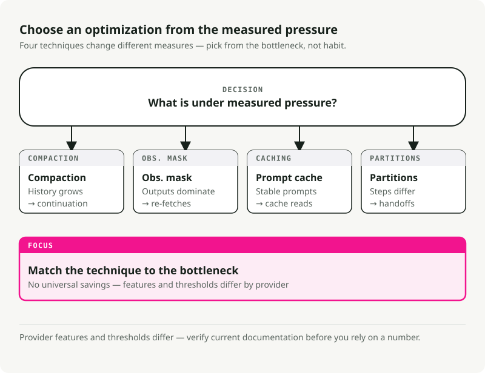
Compaction strategies
Compaction summarizes context contents when approaching limits, then reinitializes with the summary. The point is to distill content in a high-fidelity way, so the agent can keep operating with minimal degradation.
The priority order I follow: compress tool outputs first (replace with summaries), then old turns (summarize early conversation), then retrieved docs (summarize if recent versions exist). Never compress the system prompt.
What to preserve depends on the type. Tool outputs: keep findings, metrics, conclusions; throw away raw verbose output. Conversational turns: keep decisions, commitments, and context shifts; throw away filler. Retrieved documents: keep key facts and claims; throw away supporting elaboration.
Observation masking
Tool outputs can comprise over 80% of token usage [4]. Once an agent has used a tool output to make a decision, keeping the full output around provides diminishing value.
A masking decision matrix:
| Category | Action | Reasoning |
|---|---|---|
| Current task observations | Never mask | Critical to current work |
| Most recent turn | Never mask | Immediately relevant |
| Active reasoning | Never mask | In-progress thought |
| 3+ turns ago | Consider masking | Purpose likely served |
| Repeated outputs | Always mask | Redundant |
| Boilerplate | Always mask | Low signal |
KV-cache optimization
The KV-cache stores Key and Value tensors computed during inference. Caching across requests with identical prefixes avoids recomputation, which dramatically cuts cost and latency.
Optimize for caching by putting stable content first:
# Stable content first (cacheable)
context = [system_prompt, tool_definitions]
# Frequently reused elements
context += [reused_templates]
# Unique elements last
context += [unique_content]
Design for cache stability: avoid dynamic content like timestamps in prompts, use consistent formatting, and keep structure stable across sessions.
Context partitioning
The most aggressive optimization is partitioning work across sub-agents with isolated contexts. Each sub-agent operates in a clean context focused on its subtask, without carrying accumulated context from other subtasks.
For aggregation: validate all partitions completed, merge compatible results, and summarize if the combined output is still too large.
Optimization decision framework
When to optimize: context utilization exceeds 70%, response quality degrades in extended conversations, costs creep up due to long contexts, or latency climbs with conversation length.
What to apply depends on what dominates. Tool outputs dominating means observation masking. Retrieved documents dominating means summarization or partitioning. Message history dominating means compaction with summarization. Multiple components dominating means combining strategies.
Reasonable target metrics: compaction at 50-70% token reduction with under 5% quality degradation; masking at 60-80% reduction in masked observations; cache optimization at 70%+ hit rate for stable workloads.
How to cook it (step-by-step)
A practical recipe for the context layer. Start simple and add complexity only when something breaks.
Step 1: write the contract
Define what your agent must do and how it should behave. Write the system-level policies (role, constraints, safety rules) and the developer-level guidelines (output format, tone, citation requirements). Define JSON Schemas for every output shape: AnswerSchema, PlanSchema, StepResultSchema.
Step 2: pick a retrieval strategy
Start with hybrid retrieval (BM25 plus vector) and a reranker. Then route by query type. General knowledge needs no retrieval. Fresh or private facts need single-shot RAG (hybrid plus rerank). Complex multi-part queries need iterative RAG (break into subqueries).
Step 3: design memory
Split short-term (conversation state) from long-term (user facts, history). Short-term holds conversation state and the last few turns, then clears at session end. Long-term holds user entities, preferences, and episodic events. Set expiry rules: preferences 365 days, episodic 90 days, short-term session-only. Add PII redaction before storing anything.
Step 4: specify tools
Define clear tool signatures with validation and fallback strategies. For each tool, write a clear docstring, an input schema, and an output schema. Mark whether it is idempotent. Define postconditions and the fallback chain. Validate tool arguments against the schema before calling.
Step 5: install guardrails
Add input and output validation, safety filters, and policy enforcement. The minimum checklist:
- [ ] Redact PII (emails, SSNs, credit cards) before processing.
- [ ] Validate all outputs against JSON Schema.
- [ ] Block prompt injection attempts.
- [ ] Rate limit tool calls.
- [ ] Log all policy violations for auditing.
Step 6: add observability and evals
Instrument the context layer so you can debug it. Trace which context sources loaded; token counts (input, output, cost); retrieval metrics (query, top-k, sources cited); tool calls (which tools, arguments, results, failures); and guardrail triggers (input blocks, output repairs, policy refusals).
The metrics that matter most are exactness (schema validity, target 99%+), groundedness (citation rate, target 90%+ for knowledge queries), latency (target under 2s p95), and cost (target under $0.05 per query).
Step 7: iterate
Add advanced patterns only when you hit clear limits. Add reflections when error rate goes above 5%. Add planners when tasks routinely require more than three sequential steps. Add sub-agents when you have distinct domains that need isolated contexts.
Anti-patterns
Common mistakes that kill agentic systems. Avoid these.
1. Stuff-the-window
Dump every possible document, memory, and example into context on every query. The result is context rot — signal-to-noise collapses, and you hit every degradation pattern at once. See Context degradation patterns for the details on distraction and confusion. The fix is to route adaptively and apply compression and masking. See Context optimization techniques.
2. Unvalidated tool results
The agent calls a tool, gets back data, and immediately feeds it to the model without checking. Malformed data crashes downstream logic. Null results cause hallucinations. This is one of the primary vectors for Context poisoning. Always validate tool results against the schema and the postconditions.
3. One-shot everything
System policy, developer guidelines, examples, user query, memory, and knowledge all crammed into a single monolithic prompt. No separation of concerns. The context window fills with duplicate boilerplate. Separate durable instructions from step-specific context, and use the KV-cache optimization patterns above.
4. Unbounded memory
Store every user interaction forever and load it all on every query. Context fills with stale, irrelevant memories, and you absorb privacy risk for free. See the lost-in-middle phenomenon for why middle content gets ignored anyway. Set retention policies, implement scoped retrieval, and redact PII.
5. RAG everywhere
Retrieve documents for every query, even "What is 2+2?" or "Hello." Wastes latency and cost, and the retrieval injects noise that triggers Context distraction. Implement adaptive RAG routing using a classifier or a small set of heuristics.
6. Ignoring guardrail triggers
You log guardrail violations but never review them. Real attacks slip past you. Real UX issues go unnoticed. Schema repairs should not be frequent — if they are, your instructions are unclear. Review guardrail triggers weekly.
7. No evals
Ship context layer changes without testing. Silent regressions, no way to compare variants objectively. Define five to ten eval scenarios before shipping, run them on every change, and use probe-based evaluation to catch compression quality issues.
Quick wins: ship these today
If you already have an agent in production and want immediate improvements, start here. Each takes under a day.
1. Add output schema validation
Catches the majority of errors before they reach users.
from jsonschema import validate, ValidationError
def validate_output(output: dict) -> dict:
try:
validate(instance=output, schema=ANSWER_SCHEMA)
return output
except ValidationError as e:
repaired = auto_repair(output, e)
validate(instance=repaired, schema=ANSWER_SCHEMA)
return repaired
2. Instrument basic tracing
Debug significantly faster when things break.
logger.info(json.dumps({
"request_id": request_id,
"query": query,
"context_loaded": {"instructions": True, "memory": True, "knowledge": True},
"tokens": {"input": 1200, "output": 150},
"latency_ms": 1120,
"result": "success"
}))
3. Split system vs user messages
Reduces token waste significantly by enabling KV-cache optimization.
messages = [
{"role": "system", "content": SYSTEM_POLICY + DEVELOPER_GUIDELINES},
{"role": "user", "content": f"Query: {query}\nMemory: {memory}\nKnowledge: {knowledge}"}
]
4. Add citation requirements
Builds trust, enables auditing, reduces hallucinations.
5. Set memory expiry
Prevents context pollution and privacy risks.
def load_memory(customer_id: str) -> dict:
entries = db.get_memory(customer_id)
now = datetime.now()
return {
k: v for k, v in entries.items()
if v.get("expires_at", now) > now
}
Conclusion
Context engineering is the discipline that separates demo agents from production agents. The model did not get worse — the context did. The four levers worth knowing: fundamentals (context is finite, attention is limited, progressive disclosure is the unlock), degradation patterns (lost-in-middle, poisoning, distraction, confusion, clash), compression (tokens-per-task over tokens-per-request, structured summaries), and optimization (compaction, masking, caching, partitioning).
Start with the quick wins. Add complexity only when you hit a real limit. And measure everything — you cannot improve what you do not trace.
This article incorporates content from the Agent Skills for Context Engineering collection, a set of reusable knowledge modules for building better AI agents.
References
-
Liu, N. F., Lin, K., Hewitt, J., Paranjape, A., Bevilacqua, M., Petroni, F., & Liang, P. (2023). "Lost in the Middle: How Language Models Use Long Contexts." arXiv preprint arXiv:2307.03172. https://arxiv.org/abs/2307.03172
- Key finding: 10-40% lower recall accuracy for information in the middle of context vs. beginning/end.
-
Xiao, G., Tian, Y., Chen, B., Han, S., & Lewis, M. (2023). "Efficient Streaming Language Models with Attention Sinks." ICLR 2024. https://arxiv.org/abs/2309.17453
- Introduces the "attention sink" phenomenon where LLMs allocate disproportionate attention to initial tokens.
-
Hsieh, C. Y., et al. (2024). "RULER: What's the Real Context Size of Your Long-Context Language Models?" COLM 2024. https://arxiv.org/abs/2404.06654
- Key finding: Only 50% of models claiming 32K+ context maintain satisfactory performance at 32K tokens.
-
Factory.ai Research. (2025). "Evaluating Context Compression for AI Agents." https://www.factory.ai/blog/evaluating-context-compression
- Source for compression strategy comparisons, tokens-per-task optimization, and probe-based evaluation methodology.
-
Li, Y., et al. (2023). "Compressing Context to Enhance Inference Efficiency of Large Language Models." EMNLP 2023.
- Research on selective context pruning using self-information metrics.
-
Anthropic. (2024). "Model Context Protocol (MCP) Specification." https://modelcontextprotocol.io/
- Official specification for the MCP standard for AI-tool integration.
-
LangChain/LangGraph. (2024). "How to add memory to the prebuilt ReAct agent." https://langchain-ai.github.io/langgraph/how-tos/create-react-agent-memory/ — Demonstrates that summarization is one technique for managing memory within context limits.
-
Yoran, O., Wolfson, T., Bogin, B., Katz, U., Deutch, D., & Berant, J. (2024). "Making Retrieval-Augmented Language Models Robust to Irrelevant Context." ICLR 2024. https://arxiv.org/abs/2310.01558
- Key finding: Even a single irrelevant document can significantly reduce RAG performance, creating a "distracting effect."
-
Maekawa, S., et al. (2025). "NoLiMa: Long-Context Evaluation Beyond Literal Matching." ICML 2025. https://arxiv.org/abs/2502.05167
- Key finding: GPT-4o effective context ~8K tokens, Claude 3.5 Sonnet ~4K tokens when latent reasoning is required (vs. literal matching). At 32K tokens, GPT-4o drops from 99.3% to 69.7% accuracy.
Additional Resources
- Anthropic Claude Documentation: Best practices for long-context usage
- OpenAI Cookbook: Strategies for managing context windows
- LangChain Documentation: Memory and retrieval patterns
- LlamaIndex Documentation: RAG and chunking strategies